UMSI capstone, client project
White Pine Library Cooperative
Redesigning the interlibrary loan system that helps rural Michigan libraries reach materials from out of state.
1st place, Bachelor's category, 2025 UMSI Student Exposition
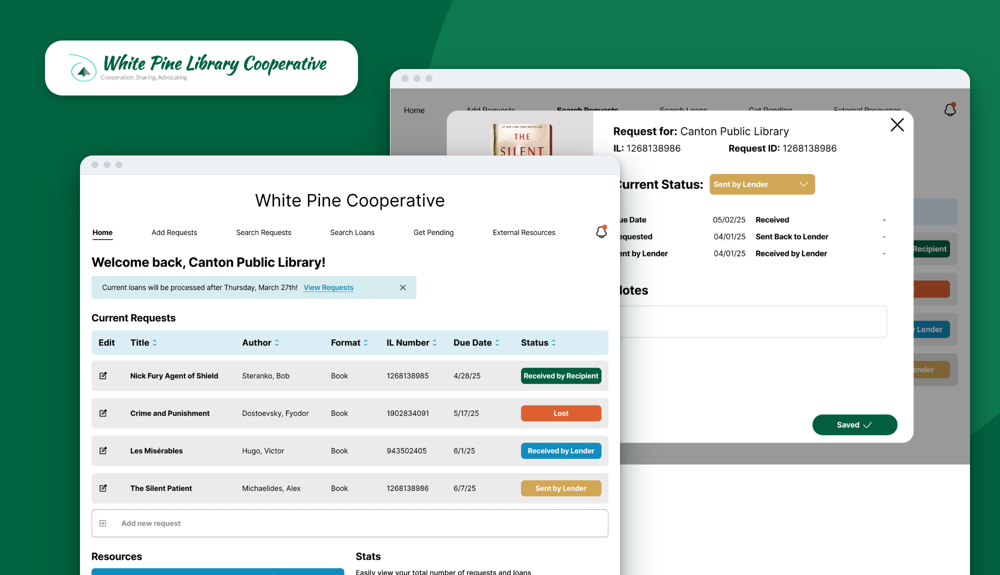
Overview
White Pine Library Cooperative (WPLC) runs Peabody, an interlibrary loan program that connects 40+ small and rural Michigan libraries to out-of-state materials without costly subscriptions.
The Peabody site librarians use every day was dated and error prone. Our team ran a full research, design, and evaluation cycle to redesign it. I was the team's project manager and also worked as a researcher and designer.
- 95System Usability Scale score for the new design
- 1stplace, Bachelor's category, 2025 UMSI Student Exposition
- Approvedfinal design accepted by the client
The challenge and the solution
The challenge
Rural libraries struggle to access out-of-state materials because subscriptions are expensive. Peabody bridges that gap, but its website made everyday requests slow and confusing. A redesign was needed to keep the program running and to protect equitable access to information for Michigan residents.
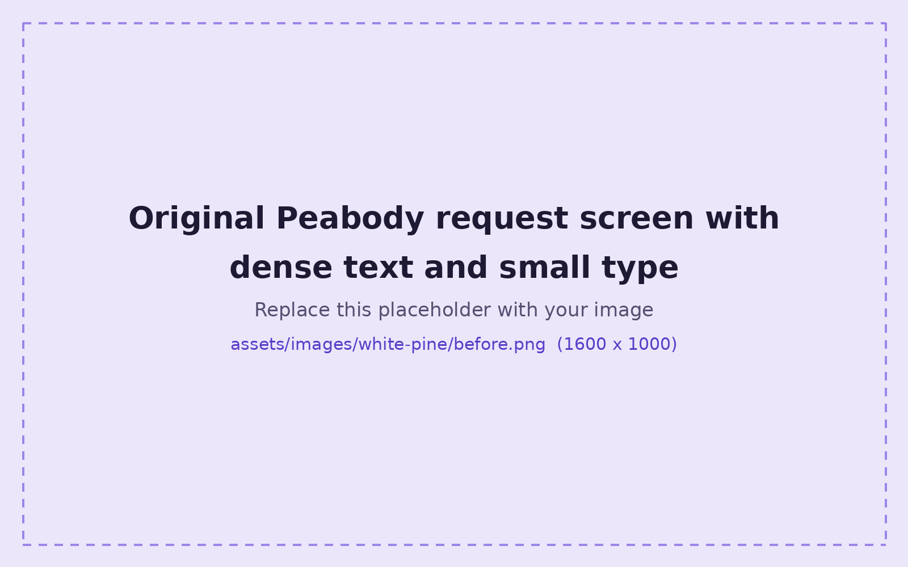
The solution
A redesigned Peabody site, built from a full research, design, and evaluation cycle with the librarians who use it. Requests now show a clear status, and the type is larger and easier to read.

The constraint: Work for every librarian
Users ranged from daily experts to occasional users, and their requests had to be weighed against the client's goals. We ranked every idea on a feasibility and value matrix before designing it.
Research
We used a mixed-methods approach to understand how librarians actually work with the system.
- 14 librarians
Screening survey
Segmented users, surfaced common issues, and recruited participants.
- 5 librarians
Interviews
Explored workflows, pain points, and ideas with current users.
- 5 librarians
Contextual inquiries
Observed librarians completing real requests in the current system.
- Our team
Heuristic evaluation
Audited the site against Nielsen's 10 usability heuristics.
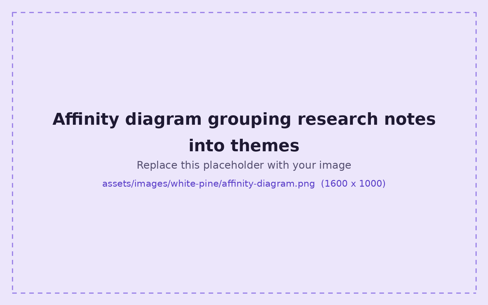
What we found
Requests were hard to find
Librarians had to search by patron name or title to see a request, and got no confirmation that a request went through.
Email alerts got missed
Updates arrived only by email. Users wanted notifications and a dashboard inside the system.
Labels and navigation confused people
Terms like “request” and “loan” were unclear, and features like past requests were hard to reach.
Data entry caused errors
Entering ISBN or OCLC numbers meant switching tabs, and no inline validation caught mistakes.
The interface needed to be more accessible
Users asked for larger type, better contrast, and clearer layouts, especially for new or occasional users.
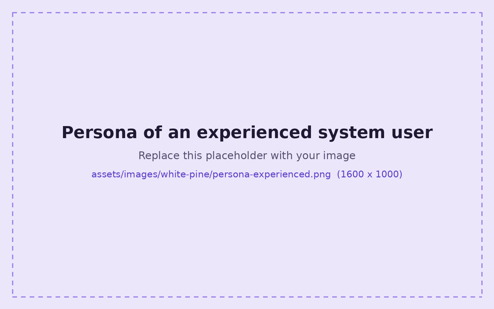
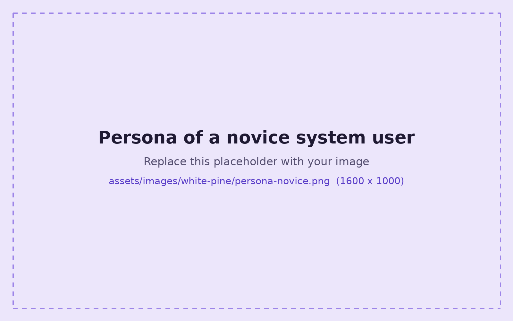
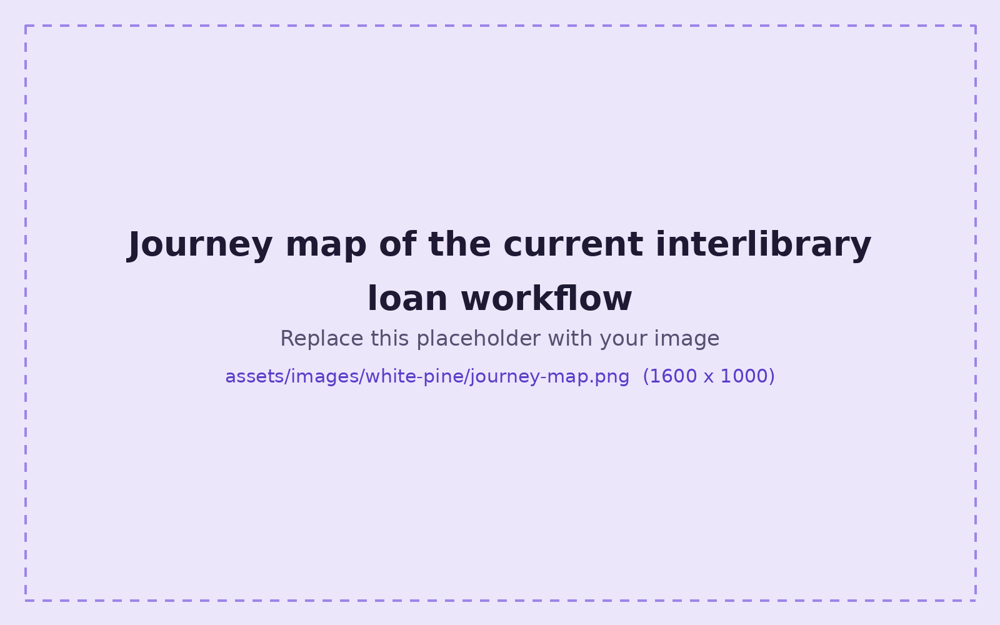
Design
We generated redesign ideas and prioritized them on a feasibility and value matrix to balance user needs with the client's goals. Then we moved from sketches to mid-fidelity wireframes.
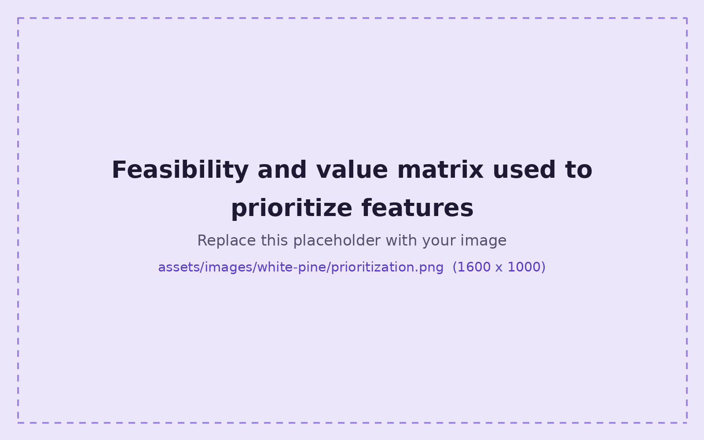
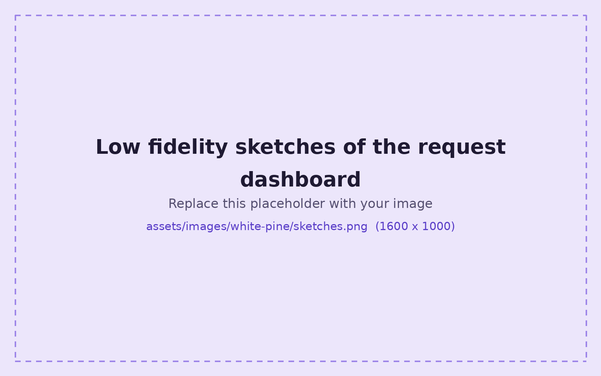
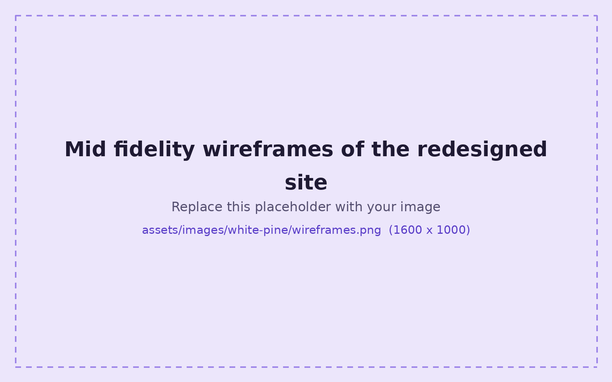
Testing and iteration
We ran 5 usability tests with current users and refined the Figma prototype based on what we saw.
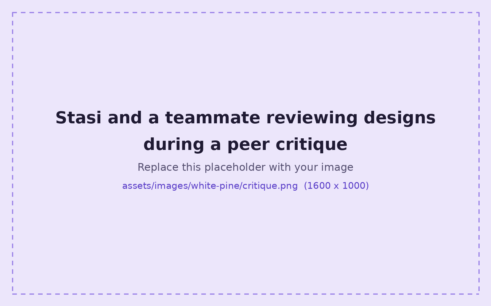
Results
Validated with current users, the new design scored 95 on the System Usability Scale. We presented the final design to the client and received approval, and the project won 1st place in the Bachelor's category at the 2025 UMSI Student Exposition.
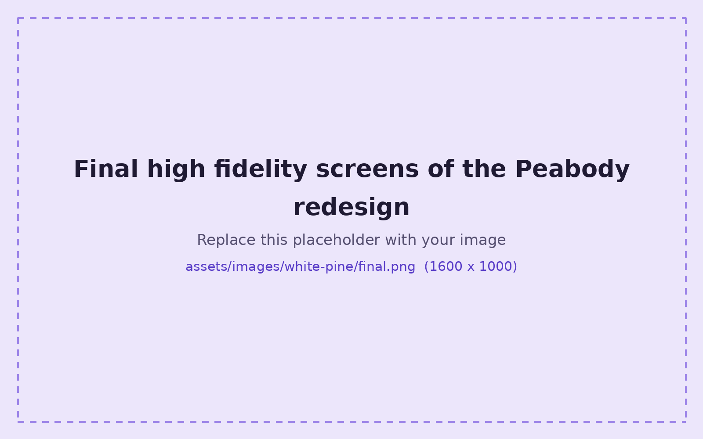
Next case study
Roos Roast